SISTEM PERSAMAAN LINEAR#
Nama: SHOFWANI NIM: 250411100090 Kelas: 2A Mata Kuliah: KOMPUTASI ALJABAR LINIER
1.1 Sistem Persamaan Linear#
Perhitungan dan studi solusi persamaan, khususnya sistem persamaan, memiliki peran yang sangat penting dalam matematika. Meskipun demikian, ini bukan satu-satunya fokus kajian para matematikawan.
Pada bab ini, akan dikembangkan teori yang hampir lengkap mengenai salah satu jenis persamaan matematika yang paling sederhana, yaitu persamaan linear. Pembahasan ini berfungsi sebagai pengantar tidak langsung menuju aljabar linear.
Melalui deskripsi parametrik solusi sistem linear, akan diperkenalkan konsep-konsep dasar dalam aljabar linear, antara lain:
Ruang vektor
Subruang
Rentang (span)
Kebebasan linear
Selain itu, bab ini juga memperkenalkan salah satu alat komputasi terpenting dalam aljabar linear, yaitu eliminasi Gauss, yang digunakan untuk menyelesaikan sistem persamaan linear secara sistematis.
1.1.1 Sistem Persamaan Linear#
Definisi 1.1.1 Persamaan Linear#
Sebuah ekspresi linear dalam \(n\) variabel \((x_1, x_2, \dots, x_n)\) adalah ungkapan matematika yang memiliki bentuk:
Di mana \(a_1, a_2, \dots, a_n\) merupakan bilangan real tetap (konstanta).
Bentuk Standar#
Persamaan linear adalah persamaan yang dapat disederhanakan (menggunakan penjumlahan dan pengurangan) menjadi bentuk standar berikut:
Catatan: Jika sebuah fungsi tidak dapat disederhanakan ke dalam bentuk standar di atas hanya dengan operasi penjumlahan dan pengurangan, maka fungsi tersebut dikategorikan sebagai nonlinier.
Klasifikasi Persamaan#
Berdasarkan nilai konstanta \(b\) pada bentuk standar, persamaan linear dibedakan menjadi dua jenis:
Jenis Persamaan |
Syarat |
|---|---|
Homogen |
Jika nilai \(b = 0\) |
Tidak Homogen |
Jika nilai \(b \neq 0\) |
1.1.2. Contoh Persamaan Linier#
Persamaan linier adalah persamaan yang setiap variabelnya berpangkat satu dan tidak saling dikalikan.
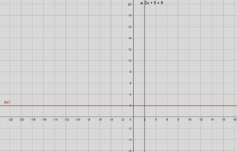
a). Persamaan: 2x + 5 = 9#
x = (9 - 5) / 2 print(“Nilai x =”, x)
b). Persamaan: 7y - 3 = 11#
y = (11 + 3) / 7 print(“Nilai y =”, y)
2. Persamaan Linier Dua Variabel#
\((x + y = 10)\)
\((2x - 3y = 5)\)
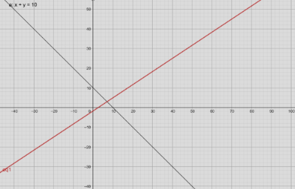
Persamaan: x + y = 10#
x = 4
y = 10 - x
print(“x =”, x, “, y =”, y)
Persamaan: 2x - 3y = 5#
x = 4
y = (2*x - 5) / 3
print(“x =”, x, “, y =”, y)
3. Sistem Persamaan Linier#
( x + y = 6 )
( 2x - y = 4 )
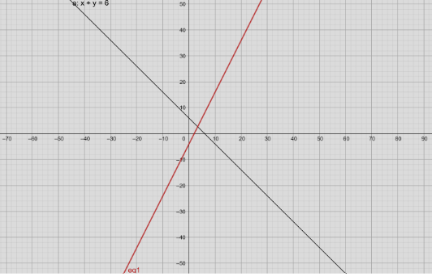
Sistem persamaan:#
x + y = 6#
2x - y = 4#
x = (6 + 4) / 3
y = 6 - x
print(“x =”, x)
print(“y =”, y)
import sympy as sp
Definisi variabel#
x, y = sp.symbols(‘x y’)
Definisi persamaan#
persamaan1 = x + y - 6
persamaan2 = 2*x - y - 4
Menyelesaikan sistem#
solusi = sp.solve((persamaan1, persamaan2), (x, y))
print(“Solusi:”, solusi)
Contoh Persamaan Nonlinier#
Persamaan nonlinier adalah persamaan yang tidak memenuhi syarat linier, misalnya variabel berpangkat lebih dari satu, saling dikalikan, atau berada di dalam fungsi tertentu.
1. Persamaan Nonlinier Satu Variabel#
( x^2 + 3x - 4 = 0 )
√x + 2 = 6
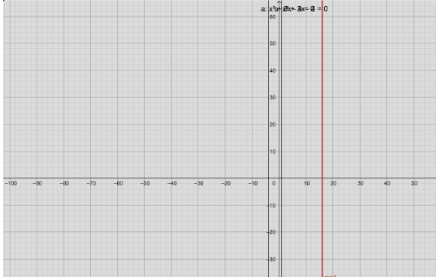
import sympy as sp
Definisi variabel#
x = sp.symbols(‘x’)
Persamaan#
persamaan = x**2 + 3*x - 4
Menyelesaikan persamaan#
solusi = sp.solve(persamaan, x)
print(“Solusi x =”, solusi)
import sympy as sp
x = sp.symbols(‘x’)
Persamaan sqrt(x) + 2 = 6#
persamaan = sp.sqrt(x) + 2 - 6
solusi = sp.solve(persamaan, x)
print(“Solusi x =”, solusi)
2. Persamaan Nonlinier Dua Variabel#
( xy = 8 )
( x^2 + y = 5 )
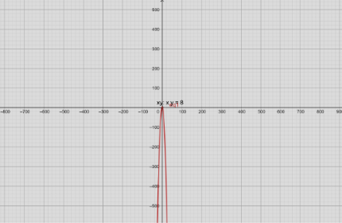
import sympy as sp
x, y = sp.symbols(‘x y’)
Persamaan#
persamaan = x*y - 8
Contoh solusi (misal x = 2)#
nilai_x = 2 nilai_y = 8 / nilai_x
print(“Jika x =”, nilai_x, “maka y =”, nilai_y)
import sympy as sp
x, y = sp.symbols(‘x y’)
Persamaan#
persamaan = x**2 + y - 5
Nyatakan y dalam x#
y_dalam_x = sp.solve(persamaan, y)
print(“y =”, y_dalam_x)
3. Persamaan Nonlinier dengan Fungsi#
\((\sin x = 0.5)\)
\((e^x = 3)\)
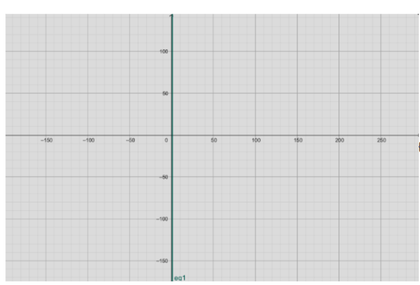
import sympy as sp
x = sp.symbols(‘x’)
Persamaan sin(x) = 0.5#
persamaan = sp.sin(x) - 0.5
solusi = sp.solve(persamaan, x)
print(“Solusi x =”, solusi) import sympy as sp
x = sp.symbols(‘x’)
Persamaan e^x = 3#
persamaan = sp.exp(x) - 3
solusi = sp.solve(persamaan, x)
print(“Solusi x =”, solusi)
Definisi 1.1.3: Sistem Persamaan Linear#
Sistem Persamaan Linear (Sistem Linear): Adalah himpunan dari satu atau lebih persamaan linear.
Sistem Linear Homogen: Adalah himpunan persamaan linear di mana setiap persamaannya merupakan persamaan linear homogen (semua konstanta di sisi kanan adalah nol).
Representasi Standar#
Untuk sistem dengan \(m\) persamaan dan \(n\) variabel \((x_1, x_2, \dots, x_n)\), suku-suku disusun dalam kolom yang sejajar:
Untuk sistem homogen, nilai \(b_1, b_2, \dots, b_m\) semuanya adalah 0.
Definisi 1.1.5: Solusi Sistem Linear#
Solusi Persamaan Linear: Sebuah \(n\)-tuple \((s_1, s_2, \dots, s_n)\) bilangan real yang jika ditugaskan ke variabel \((x_1 = s_1, x_2 = s_2, \dots)\) membuat persamaan tersebut benar.
Solusi Sistem Persamaan Linear: Sebuah \(n\)-tuple yang merupakan solusi untuk setiap persamaan yang ada di dalam sistem tersebut.
Contoh 1.1.6: Analisis Geometris#
Secara intuitif, kita dapat melihat solusi sistem melalui geometri:
Persamaan linear dengan dua variabel mendefinisikan sebuah garis dalam \(\mathbb{R}^2\).
Persamaan linear dengan tiga variabel mendefinisikan sebuah bidang dalam \(\mathbb{R}^3\).
Contoh Sistem Dasar:#
\(x - y = 0\) dan \(x - y = 1\) (Garis sejajar \(\rightarrow\) Tidak ada solusi).
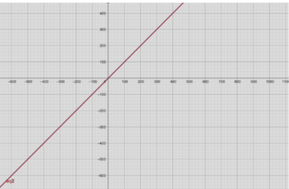
\(x - y = 0\) dan \(x + y = 1\) (Garis berpotongan \(\rightarrow\) Satu solusi unik).
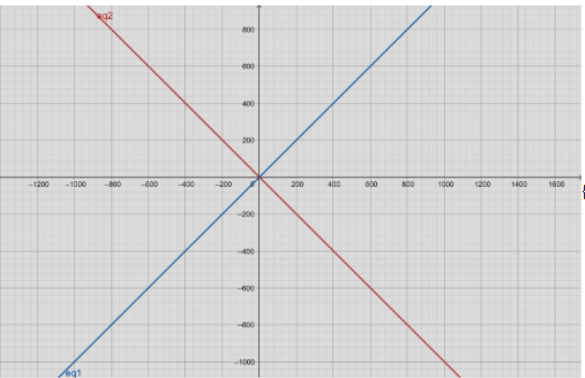
\(x - y = 1\) dan \(2x - 2y = 2\) (Garis berhimpit \(\rightarrow\) Solusi tak terhingga).
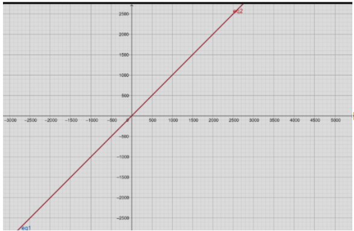
a. Sistem Pertama#
Persamaan yang diberikan:
\(-8x - 7y = 3\)
\(4x + 4y = 8\)
\(-16x - 13y = 25\)
Analisis:#
Jika kita mengalikan persamaan (2) dengan 2, kita mendapatkan \(8x + 8y = 16\).
Menjumlahkan ini dengan persamaan (1): \((-8x + 8x) + (-7y + 8y) = 3 + 16 \implies y = 19\).
Substitusi \(y = 19\) ke persamaan (2):
$\(4x + 4(19) = 8 \implies 4x + 76 = 8 \implies 4x = -68 \implies x = -17\)$Sekarang, uji titik \((-17, 19)\) ke persamaan (3): \(-16(-17) - 13(19) = 272 - 247 = 25\). Karena hasilnya sesuai dengan persamaan ketiga, sistem ini konsisten.
Kesimpulan: Memiliki solusi tunggal \((x, y) = (-17, 19)\).
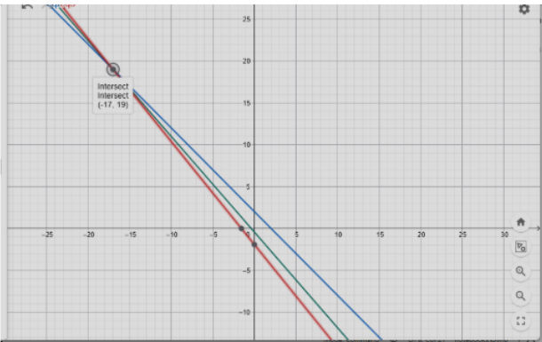
import numpy as np
Matriks koefisien#
A = np.array([ [-8, -7], [4, 4], [-16, -13] ])
Vektor konstanta#
B = np.array([3, 8, 25])
Least squares solution#
solution, residuals, rank, s = np.linalg.lstsq(A, B, rcond=None)
x, y = solution
print(f”x = {x}”) print(f”y = {y}”)
x = -17.000000000000014 y = 19.000000000000025
b. Sistem Kedua#
Persamaan yang diberikan:
\(-8x - 7y = 3\)
\(4x + 4y = 8\)
\(-16x - 13y = 27\)
Analisis:#
Dua persamaan pertama identik dengan sistem (a), yang menghasilkan titik potong \((-17, 19)\).
Uji titik \((-17, 19)\) ke persamaan (3): \(-16(-17) - 13(19) = 25\).
Namun, persamaan ketiga dalam sistem ini menyatakan hasilnya haruslah \(27\). Karena \(25 \neq 27\), tidak ada titik yang memenuhi ketiga persamaan sekaligus.
Kesimpulan: Tidak memiliki solusi.
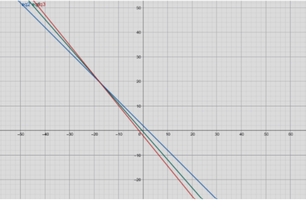
import numpy as npMatriks koefisien#
A = np.array([ [-8, -7], [4, 4], [-16, -13] ])
Vektor konstanta#
B = np.array([3, 8, 27])
Solusi least squares#
solution, residuals, rank, s = np.linalg.lstsq(A, B, rcond=None)
x, y = solution
print(f”x = {x}”) print(f”y = {y}”) print(f”residuals = {residuals}”)
c. Sistem Ketiga#
Persamaan yang diberikan:
\(25x - 15y = 10\)
\(-15x + 9y = -6\)
\(30x - 18y = 12\)
Analisis:#
Jika persamaan (1) dibagi 5, hasilnya adalah \(5x - 3y = 2\).
Jika persamaan (2) dibagi -3, hasilnya adalah \(5x - 3y = 2\).
Jika persamaan (3) dibagi 6, hasilnya adalah \(5x - 3y = 2\).
Ketiga persamaan tersebut sebenarnya adalah garis yang sama.
Kesimpulan: Memiliki solusi tak terbatas.
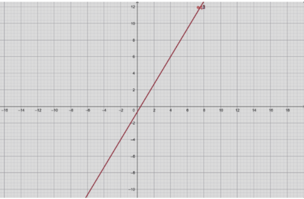
import numpy as npA = np.array([ [25, -15], [-15, 9], [30, -18] ])
B = np.array([10, -6, 12])
solution, residuals, rank, s = np.linalg.lstsq(A, B, rcond=None)
x, y = solution print(f”x = {x}”) print(f”y = {y}”) print(f”residuals = {residuals}”)
Metode Penyelesaian Sistem Persamaan Linear#
1. Metode Substitusi#
Contoh Soal#
Penyelesaian#
Substitusikan \(x = 2\) ke persamaan pertama: $\(2 + y = 5 \longrightarrow y = 3\)$
Solusi#
2. Metode Eliminasi#
Contoh Soal#
Penyelesaian#
Jumlahkan kedua persamaan: $\((x + y) + (x - y) = 5 + 1 \longrightarrow 2x = 6 \longrightarrow x = 3\)$
Substitusi ke persamaan pertama: $\(3 + y = 5 \longrightarrow y = 2\)$
Solusi#
3. Metode Matriks (Eliminasi Gauss)#
Contoh Soal#
Bentuk Matriks Augmented#
Operasi Baris#
Penyelesaian#
Substitusikan ke persamaan pertama: $\(x + 2\left(\frac{23}{7}\right) = 8 \longrightarrow x = \frac{10}{7}\)$
Solusi#
4. Aturan Cramer#
Contoh Soal#
Matriks Koefisien#
Determinan#
Hitung (x) dan (y)#
Solusi#
5. Metode Numerik (Iterasi – Jacobi)#
Contoh Soal#
Iterasi Awal#
Ambil tebakan awal: \(x^{(0)} = 0, \quad y^{(0)} = 0\)
Iterasi 1#
Iterasi 2#
Iterasi dilanjutkan hingga nilai konvergen.
Representasi Matriks & Eliminasi Gauss#
1. Representasi Matriks#
Suatu sistem persamaan linear dapat direpresentasikan dalam bentuk matriks.
Contoh sistem persamaan:
Representasi matriks:
2. Matriks Augmented#
Untuk menyelesaikan sistem persamaan menggunakan metode Eliminasi Gauss, sistem diubah ke bentuk matriks augmented:
3. Eliminasi Gauss#
Eliminasi Gauss dilakukan dengan operasi baris elementer hingga diperoleh matriks eselon baris.
Langkah-langkah umum:#
Menghilangkan elemen di bawah pivot (angka utama).
Menjadikan matriks berbentuk segitiga atau eselon.
Melakukan substitusi balik untuk mendapatkan nilai variabel.
4. Tujuan Eliminasi Gauss#
Menyederhanakan sistem persamaan linear.
Menentukan solusi sistem (tunggal, banyak, atau tidak ada solusi).
Mempermudah perhitungan pada sistem persamaan yang lebih besar.
5. Kesimpulan#
Metode Eliminasi Gauss adalah cara sistematis untuk menyelesaikan sistem persamaan linear dengan:
Mengubah persamaan ke bentuk matriks.
Menggunakan operasi baris elementer.
Mendapatkan solusi secara terstruktur dan efisien.
Contoh Tahapan Penyelesaian#
Sistem Persamaan Linear
Sistem Persamaan Awal#
Tahap 2: Mengalikan Persamaan#
Kita dapat mengalikan persamaan pertama dengan 5.
Sehingga sistem menjadi:
Tahap 3: Menjumlahkan Persamaan#
Kita dapat menambahkan 2 kali persamaan pertama dengan persamaan terakhir.
Hasilnya:
Sistem Persamaan Baru#
import sympy as sp
==============================#
1. Matriks Augmented Awal#
==============================#
A = sp.Matrix([ [1, -1, 1, 3], [2, 1, 8, 18], [4, 2, -3, -2] ])
print(“Matriks awal:”) sp.pprint(A)
==============================#
2. Eliminasi elemen di bawah pivot pertama#
R2 = R2 - 2R1#
R3 = R3 - 4R1#
==============================#
A[1, :] = A[1, :] - 2A[0, :] A[2, :] = A[2, :] - 4A[0, :]
print(“\nSetelah eliminasi kolom pertama:”) sp.pprint(A)
==============================#
3. Eliminasi elemen di bawah pivot kedua#
R3 = R3 - 2R2#
==============================#
A[2, :] = A[2, :] - 2*A[1, :]
print(“\nSetelah eliminasi kolom kedua:”) sp.pprint(A)
==============================#
4. Normalisasi pivot#
R2 = R2 / 3#
R3 = R3 / -19#
==============================#
A[1, :] = A[1, :] / 3 A[2, :] = A[2, :] / (-19)
print(“\nSetelah normalisasi pivot:”) sp.pprint(A)
==============================#
5. Eliminasi ke atas (Gauss-Jordan)#
==============================#
A[0, :] = A[0, :] + A[1, :] A[0, :] = A[0, :] - A[2, :] A[1, :] = A[1, :] - 2*A[2, :]
print(“\nMatriks eselon baris tereduksi (RREF):”) sp.pprint(A)
Matriks awal:#
⎡1 -1 1 3 ⎤ ⎢ ⎥ ⎢2 1 8 18⎥ ⎢ ⎥ ⎣4 2 -3 -2⎦
⎡1 -1 1 3 ⎤ ⎢ ⎥ ⎢0 3 6 12 ⎥ ⎢ ⎥ ⎣0 6 -7 -14⎦
⎡1 -1 1 3 ⎤ ⎢ ⎥ ⎢0 3 6 12 ⎥ ⎢ ⎥ ⎣0 0 -19 -38⎦
⎡1 -1 1 3⎤ ⎢ ⎥ ⎢0 1 2 4⎥ ⎢ ⎥ ⎣0 0 1 2⎦
⎡1 0 2 5⎤ ⎢ ⎥ ⎢0 1 0 0⎥ ⎢ ⎥ ⎣0 0 1 2⎦
1. Sistem Persamaan#
Kita mulai dengan tiga persamaan:
\(x_1 - x_2 + x_3 = 3\)
\(x_2 + 2x_3 = 4\)
\(x_3 = 2\)
2. Solusi Langkah-demi-Langkah#
Langkah 1: Mencari nilai \(x_2\)
Karena kita sudah tahu \(x_3 = 2\), kita masukkan nilainya ke dalam persamaan kedua:
\[ x_2 + 2(2) = 4 \]\[ x_2 + 4 = 4 \]\[ x_2 = 0 \]Langkah 2: Mencari nilai \(x_1\)
Setelah mendapatkan \(x_3 = 2\) dan \(x_2 = 0\), kita masukkan keduanya ke dalam persamaan pertama:
\[ x_1 - 0 + 2 = 3 \]\[ x_1 + 2 = 3 \]\[ x_1 = 1 \]
Hasil Akhir#
Himpunan penyelesaian untuk sistem ini adalah: